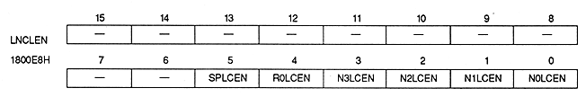

Line color screen enable bit : Line color enable bit
| N0LCEN | 1800E8H | Bit 0 | For NBG0 (or RBG1 For use) |
| N1LCEN | 1800E8H | Bit 1 | For NBG1 (or EXBG) |
| N2LCEN | 1800E8H | Bit 2 | NBG2 |
| N3LCEN | 1800E8H | Bit 3 | NBG3 |
| R0LCEN | 1800E8H | Bit 4 | For RBG0 |
| SPLCEN | 1800E8H | Bit 5 | For Sprite |
| xxLCEN | Process |
| 0 | Do not insert a line color screen when the corresponding screen is the top image |
| 1 | Insert a line color screen when the corresponding screen is the top image |
The line color screen is inserted only in the second image where the screen specified to be inserted is the top image.
∙ Sprites can be specified only for the entire sprite. If you want to specify for each character, use the color calculation ratio value for each character.
∙ It cannot be used at the same time as the blur calculation function.